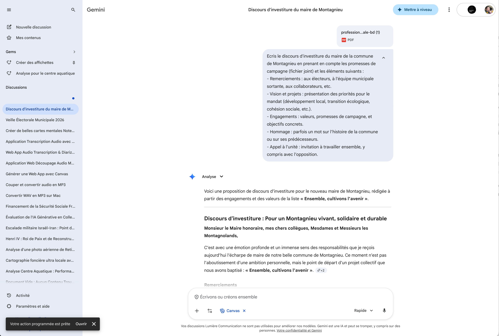

Gemini — Vue principale
Gemini est l'assistant IA de Google, accessible directement depuis votre navigateur. Contrairement à NotebookLM qui travaille exclusivement à partir de vos documents, Gemini s'appuie sur ses connaissances générales pour vous aider à rédiger, analyser, rechercher et créer du contenu. Vous pouvez aussi lui fournir des fichiers ponctuellement pour qu'il les analyse. C'est votre assistant polyvalent au quotidien.
Cliquez sur les pastilles orange pour découvrir chaque fonctionnalité

Cliquez sur une pastille pour en savoir plus